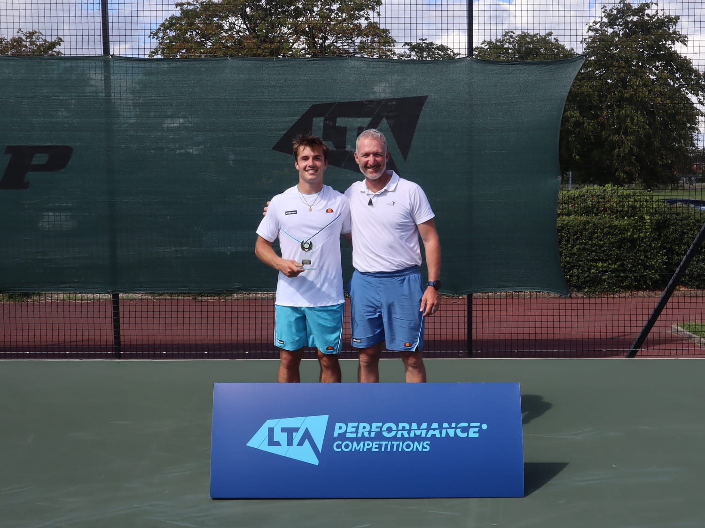

Coach ATP · Tennis en ligne
Ready2Perform : un coaching en ligne qui porte ton niveau d'entraînement jusqu'en match. Apprends à jouer ta propre technique, et arrête de forcer celle d'un autre.
Ça te parle ?
Tu t'entraînes plus que les joueurs qui te battent. À l'échauffement, ton coup droit est propre, ton timing est là, et pendant quelques jeux ça tient. Puis le score se resserre, et quelque chose change. Ton bras se crispe, tes jambes se figent, et la balle que tu as frappée dix mille fois part dehors.
Tu perds contre quelqu'un que tu battrais neuf fois sur dix à l'entraînement. Tu rejoues les points pendant tout le trajet du retour, en sachant que tu vaux mieux que ça. Et au fond, il y a cette question que tu ne dis pas à voix haute : c'est peut-être juste mon niveau.
Alors tu fais ce que tu as toujours fait. Tu t'entraînes plus dur, tu prends un cours de plus, tu copies la technique d'un pro que tu as vue sur YouTube. Pendant une semaine, ça semble différent. Puis tu remarques que tu es toujours sur le même plateau, et le prochain match se passe comme les autres.
Ce n'est pas ton effort. Et ce n'est sûrement pas ton talent.
Il existe une autre voie
Pendant des années, on t'a donné le même modèle. Tiens la raquette comme ça. Termine ton geste comme ci. Copie les joueurs que tu regardes à la télé. Mais ton corps n'est pas leur corps. Forcer leur technique, c'est la raison pour laquelle ton jeu semble mécanique, et la raison pour laquelle il s'effondre dès que la pression est réelle.
Il existe une autre façon de t'entraîner. Au lieu de copier un modèle, tu découvres comment ton propre corps est câblé pour bouger, et tu construis des coups efficaces et reproductibles autour de ça. Puis tu travailles les deux choses qui décident vraiment des matchs : rester relâché sous pression, et un plan de jeu clair et simple auquel te fier quand le score est serré.
C'est ça, Ready2Perform : un coaching qui aide les joueurs engagés à bâtir un jeu qui leur ressemble, et le calme pour le jouer quand ça compte. Sans forcer. Sans copier. Juste ton tennis le plus naturel et le plus efficace.
Ce qui change pour toi
Ce qu'en disent les joueurs
« Benoit est un super coach, point. »
« Une connaissance profonde du tennis, et un accompagnement personnalisé plutôt que des règles rigides. Son approche intuitive et adaptative a amélioré ma technique, mon équilibre et mon jeu en général. »
« Je gagne, mais à aucun moment je ne pense à gagner. Je suis concentré sur quoi faire ensuite. Au final, le résultat n'est qu'une conséquence de la bonne attitude. »

Travaille avec moi
Un coaching en ligne individuel qui transforme ton niveau d'entraînement en résultats en match. Personnel, de la première vidéo à la dernière.
Sur candidature. Je prends un nombre limité de joueurs à la fois.
Places limitées
Chaque place est individuelle et entièrement personnelle, de ta première analyse vidéo à la dernière. Cela limite forcément le nombre de joueurs que je peux prendre. Quand les places sont prises, les nouvelles candidatures rejoignent la liste d'attente pour la prochaine session. Si tu es sérieux pour cette saison, c'est le moment de t'engager.
Ma promesse
Le coaching ne fonctionne que quand c'est le bon match, alors je retire le risque avant même que tu t'engages.
Ta prochaine étape
Voici exactement comment ça se passe.
Parle-moi de ton jeu et de ce que tu veux le plus améliorer. Ça prend deux minutes.
Un court appel pour comprendre ton jeu et voir si on est faits pour travailler ensemble. Sans pression.
Si c'est oui, tu envoies ta première vidéo de match et ton analyse de jeu commence.
Avant de partir
Les mêmes entraînements qui font du bien. Les mêmes matchs où tout s'échappe. Les mêmes défaites contre des joueurs que tu sais moins bons, et cette petite voix qui te souffle que c'est peut-être juste ton niveau. Rien ne change tout seul.
Tu as déjà le niveau. Tout le travail consiste à le faire apparaître quand ça compte. Je coache un nombre limité de joueurs, sur candidature uniquement. Si c'est la saison où tu arrêtes de laisser ton meilleur tennis à l'entraînement, fais le premier pas maintenant.